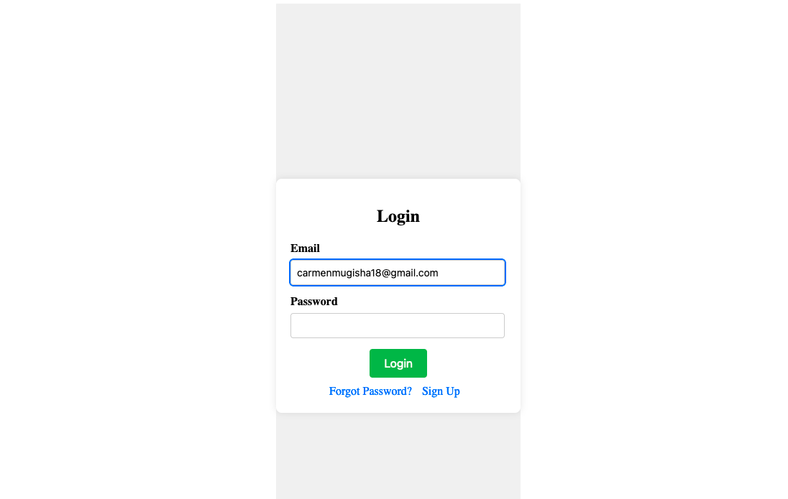
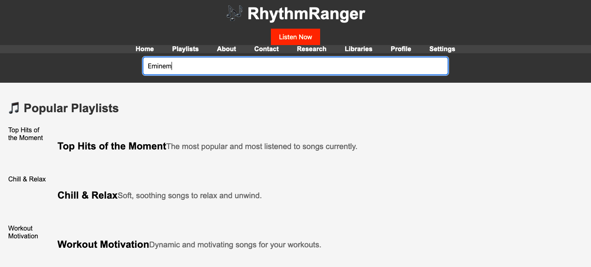

Explore RhythmRanger Features
 
RhythmRanger uses advanced algorithms to analyze your music preferences and recommend new songs, albums, and artists that match your unique tastes.Explore a musical universe adapted specifically to you, for an enriched and personalized listening experience.Intuitive Playlist Creation:Create and organize your playlists in the blink of an eye with RhythmRanger.Drag and drop your favorite tracks,organize them by genre, mood, or occasion, and easily access your personalized music compilations wherever you are.Seamless Integration with Spotify:Connect your Spotify account to RhythmRanger to automatically sync your playlists and music libraries.Enjoy a seamless transition between the two platforms, ensuring a seamless listening experience without interruption.